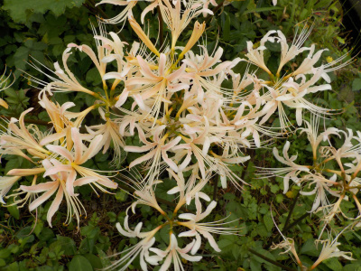
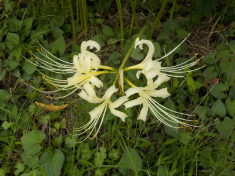
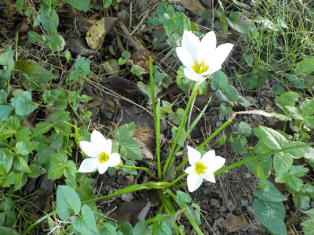
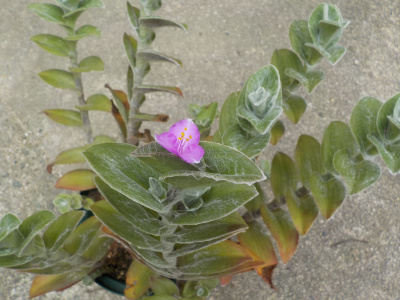
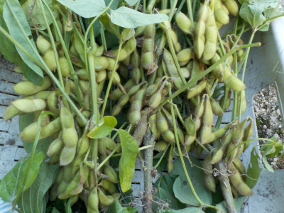
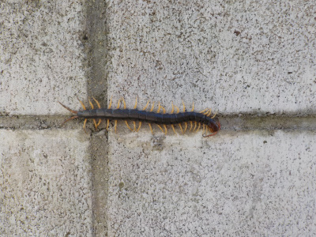

白い彼岸花はそろそろ終わり。
2022/09/18

花が少し茶色くなってきました。そろそろ終わりです。
約1週間楽しめました。
2022/09/18

花が少し茶色くなってきました。そろそろ終わりです。
約1週間楽しめました。
2022/09/11

お彼岸はまだ先ですが、もう彼岸花が咲いていました。
このホームページで過去の開花を調べたところ、2021年は9/19、2018年は9/23に写真を撮っていました。
今年は早いですね。
白い彼岸花は毎年見るのを楽しみにしているので、毎年写真を撮ってると思っていましたが、案外写真を撮っていなかったです。
2022/09/11

ブラックベリーが茂っている場所の真下で、ほぼ日が当らないですが花が咲いてました。
雑草もあまり生えないような場所でよく育ってますね。強い草ですね。
2022/09/06

葉っぱが大きく育ったので、花がとっても小さく見えます。
葉っぱを楽しんだ方がいいですね。
2022/09/04

枝豆は新鮮なうちに茹でましょうって聞くので、収獲したその日のうちに茹でます。
でもお店で買ったったらあんまり新鮮ではないですよね？たぶん。
どうなっているんだろう？遠くから輸送して店頭に並んで購入するまでに2日とか経ってそう。それくらい問題ないのかな？
お店で買うのは冷凍ものの方が鮮度がいいのかな？
2022/09/04

植木鉢の下にムカデがいました。自宅でムカデを見たのは初めてです。
過疎化のせい？地球温暖化のせい？
過去の日記
台風の季節です。